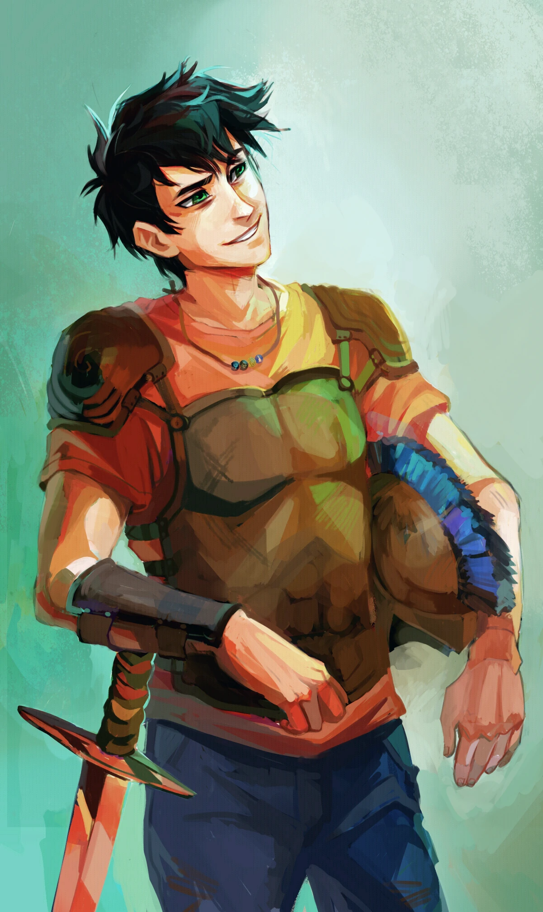

Percy Jackson
"Non ho scelto io di essere un mezzosangue.
Se state leggendo questo sito perché pensate di poterlo essere anche voi, vi do un consiglio: chiudetelo all'istante.
Essere dei mezzosangue è pericoloso. E' terrificante. Nella maggior parte dei casi, si finisce ammazzati in
modi orribili e dolorosi. Se invece siete dei ragazzi normali e pensate che questo sia un sito normale, perfetto.
Continuate a leggere. Ma se vi riconoscete in queste righe - se vi smuovono qualcosa dentro - smettete subito.
Potreste essere dei nostri. E quando lo avrete capito, sarà solo questione di tempo perché se ne accorgano anche
loro e vengano a cercarvi. Non dite che non vi avevo avvertito :)"
CHI E'?
Percy Jackson, un ragazzo straordinario il cui destino è legato alle leggende dell'antica mitologia
greca. Figlio di Poseidone, dio del mare, Percy è un semidio che vive tra il mondo degli dei dell'Olimpo e quello degli esseri
umani. La sua vita è pervasa da creature mitologiche, influenze divine e battaglie tra il bene e il male. La sua avventura
inizia quando scopre la sua vera identità, catapultandolo in un mondo di pericoli, misteri e magia. Affronta incredibili
sfide, navigando tra mostri, divinità gelose e oscuri complotti. Lungo il suo viaggio, impara il significato dell'amicizia,
del coraggio e dell'accettazione di sé mentre cerca di trovare il suo posto nel mondo e difendere ciò in cui crede.
MA QUESTO E' SOLO L'INIZIO!
| SALUTO | VERBO | SALUTO |
|---|
| CIAO | SONO | LUNA |
| CIAO | SONO | PUGGIONI |
SAGHE PRINCIPALI
 Percy Jackson e gli dei dell'Olimpo
Percy Jackson e gli dei dell'Olimpo
- Il ladro di fulmini
- Il mare dei mostri
- La maledizione del Titano
- La battaglia del labirinto
- Lo scontro finale
Seconda pagina

Percy Jackson e gli eroi dell'Olimpo
- L'Eroe Perduto
- Il figlio di Nettuno
- Il marchio di Atena
- La casa di Ade
- Il Sangue dell'Olimpo